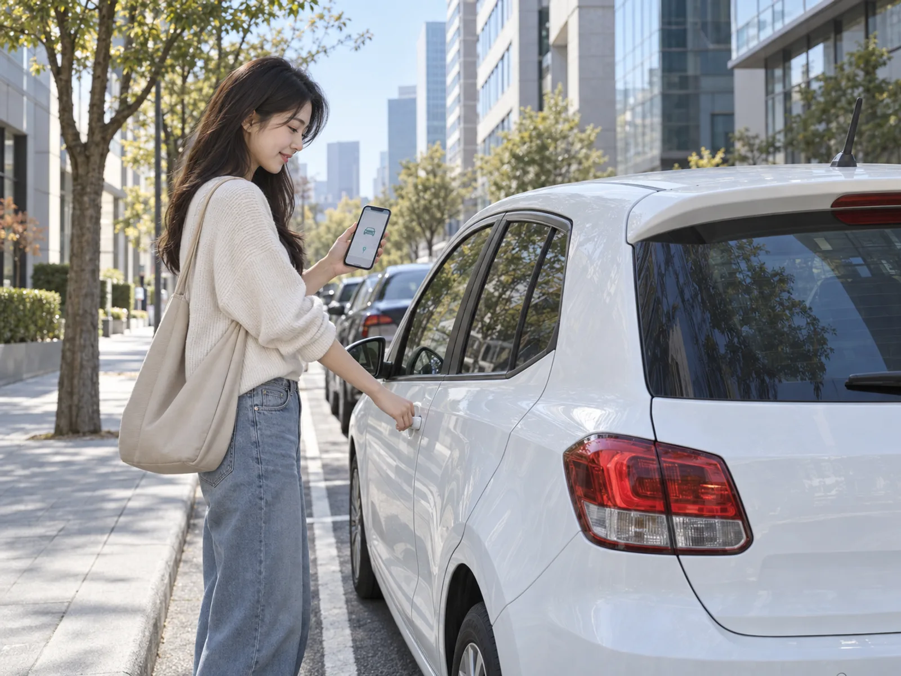
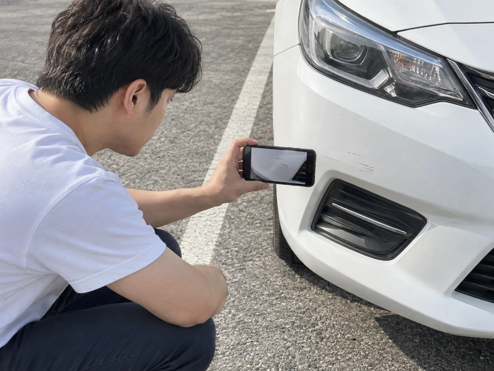
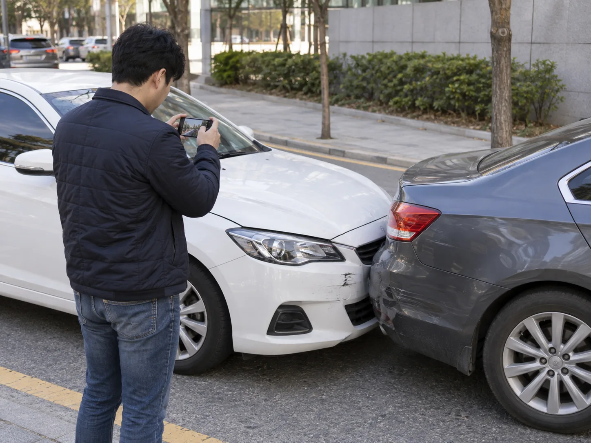

▲ 카셰어링은 사람을 만나지 않고 앱 안에서 예약부터 잠금 해제, 반납까지 끝난다.
먼저 3줄 요약
- 쏘카는 만 21세 이상 + 국내 운전면허 + 본인 명의 휴대폰·카드만 있으면 가입 가능하다. 2026년 4월 28일부터는 '면허 취득 후 1년 경과' 조건도 사라졌다.
- 분쟁의 8할은 대여 시작 10분 전 '외관 촬영'을 건너뛰어서 생긴다. 쿠션타임 10분 안에 부위별 사진을 찍어 앱에 올려야 한다.
- 주유비는 내 돈이 아니라 차 안에 꽂혀 있는 쏘카 전용 카드로 낸다. 개인 카드로 결제하면 오히려 환불이 안 된다.
렌터카는 카운터에서 직원과 계약서를 쓰고 차 키를 건네받는 방식이지만, 쏘카·그린카 같은 카셰어링은 그 과정 전체가 스마트폰 안에서 끝난다. 사람을 마주치지 않고, 30분 단위로도 빌릴 수 있고, 반납도 지정된 노상 주차 구역에 세워두고 앱 버튼 하나로 끝낸다. 구조가 다른 만큼 초행자가 놓치기 쉬운 지점도 다르다. 이 글은 실제 이용 순서, 즉 예약 → 대여 10분 전 외관 촬영 → 운행 중 주유 → 반납 → 사고 시 대응 순서를 그대로 따라가며 정리했다.
1. 예약 화면에서: 가입 조건과 요금 두 갈래부터 이해하자
쏘카 가입 조건은 만 21세 이상, 국내 운전면허(실물·모바일 운전면허증 또는 PASS 인증), 본인 명의 휴대전화와 신용·체크카드 세 가지다. 눈여겨볼 변화가 하나 있는데, 과거에는 '운전면허 취득 후 1년 경과'라는 조건이 별도로 붙어 있었지만 2026년 4월 28일부터 이 조건이 삭제되면서 면허를 갓 취득한 사람도 나이 요건만 충족하면 예약할 수 있게 됐다.
요금은 크게 두 갈래다. 대여요금(시간 단위 이용료)과 주행요금(달린 거리에 매기는 요금)이 따로 계산된다. 대여요금은 차종·지역·시간대에 따라 달라 앱 예약 화면에서 실시간으로 확인해야 정확하지만, 주행요금은 규칙이 명확하다. 내연기관 차량은 30km까지 주행요금이 무료이고 이를 초과하면 차종에 따라 km당 240~320원이 붙는다. 전기차는 주행 거리와 무관하게 주행요금 자체가 없다. 참고로 24시간·200km 이용을 가정한 예상 비용은 경차 약 4만~7만 원, 준중형 약 6만~10만 원, 소형 SUV 약 9만~13만 원 선으로 안내된다.
쏘카 요금 구조는 아래에서 확인 가능하다. 쏘카 요금 총정리 바로가기

▲ 대여 시작 10분 전 쿠션타임 동안 외관을 촬영해 앱에 올려야 나중에 억울한 청구를 피할 수 있다.
2. 대여 10분 전: 진짜 승부는 여기서 갈린다
예약이 끝났다고 곧바로 시동을 걸 필요는 없다. 쏘카는 대여 시작 시간 10분 전부터 '쿠션타임'을 제공해 차량에 미리 접근할 수 있게 해준다. 이 10분을 시동만 걸고 흘려보내면 안 된다. 차량에 도착하면 기존 흠집이나 특이사항이 있는지 외관 전체를 눈으로 훑고, 스마트키 화면(또는 앱)에서 차량 부위별로 사진을 촬영해 전송하는 절차를 거쳐야 한다.
특히 꼼꼼히 봐야 할 부위는 범퍼 하단, 문 모서리(이른바 '문콕' 자국), 사이드스커트, 휠, 휀더 다섯 곳이다. 앱이 요구하는 촬영을 마쳤더라도 여기서 그치지 말고, 차량을 한 바퀴 돌며 영상으로 남기거나 흠집이 눈에 띄는 부위를 별도로 클로즈업해두는 편이 안전하다. 나중에 반납 후 "이 흠집은 언제 생겼느냐"는 분쟁이 생겼을 때 이 10분간의 기록이 유일한 증거가 되기 때문이다. 렌터카는 직원이 계약 시점에 함께 차량 상태를 확인하고 서명까지 받지만, 무인으로 운영되는 카셰어링은 이 확인 책임이 전적으로 이용자에게 넘어온다는 점이 가장 큰 구조적 차이다.
3. 운행 중: 주유는 '내 돈'이 아니라 '카드'로
운행 중 기름이 떨어지면 당황할 필요 없다. 쏘카 차량 안에는 주유 전용 카드가 비치돼 있고(보통 운전석 주변), 주유소에서는 반드시 이 카드로 결제해야 한다. 카드로 결제한 금액은 이용자에게 별도로 청구되지 않는다. 즉 주유카드로 3만 원어치를 채웠다고 해서 반납할 때 3만 원을 추가로 정산할 필요는 없다는 뜻이다.
다만 주의할 점이 있다. 개인 신용카드나 현금으로 결제하면 나중에 환급 절차가 번거로워지거나 아예 환급이 안 되는 경우가 생길 수 있으므로, 반드시 차량에 비치된 지정 카드를 사용하고 주유 영수증을 챙겨두는 것이 안전하다. 전기차의 경우 주행요금 자체가 없다는 규정과 별개로 충전 규정은 차종별 안내를 앱에서 따로 확인해야 한다.
▲ 주유비는 이용자 부담이 아니라 차량에 비치된 쏘카 전용 카드로 결제한다.
4. 반납: 잠그기 전에 사진 한 장
반납 절차 자체는 단순하다. 지정된 쏘카존(반납 구역)에 정확히 주차하고, 차 문을 잠근 뒤 앱에서 '반납하기' 버튼을 누르면 이용이 종료된다. 하지만 이 마지막 단계에서도 사진을 생략하면 안 된다. 대여 시작 때와 마찬가지로 반납 직전 차량 외관과 주차 상태를 촬영해두면, 이후 "반납 후 파손이 발견됐다"는 식의 추가 요금 분쟁이 생겼을 때 결정적인 증빙이 된다. 반납 구역을 벗어나 임의의 자리에 주차하면 별도 패널티가 발생할 수 있으므로 앱이 안내하는 반납존 위치를 반드시 확인해야 한다.
▲ 반납 직전 촬영한 사진 한 장이 사후 파손 분쟁에서 가장 확실한 증거가 된다.
5. 만약 사고가 났다면: 1661-4977부터 누르자
운행 중 사고가 나면 가장 먼저 할 일은 부상 여부를 확인하는 안전 조치다. 이후 쏘카 사고접수센터(1661-4977)로 즉시 연락하면 된다. 이 번호는 365일 24시간 사고 접수만을 위해 운영되는 핫라인으로, 전화를 걸면 이후 차량 반납 방법과 절차를 안내받을 수 있다. 안내에 따라 사고 현장 사진을 촬영해 문자로 전송된 링크에 업로드하고, 그 자리를 뜨기 전에 상대방 차량 번호와 연락처를 반드시 확보해야 한다. 이후 1~2일 안에 보험사와 쏘카 담당자가 연락을 주며, 진행 상황은 앱 내 사고케어센터에서 계속 확인할 수 있다.
사고 접수 이후의 흐름을 조금 더 구체적으로 보면, 신고 전화만 끊는다고 끝나는 게 아니다. 상담원이 안내하는 체크리스트에 따라 차량 앞뒤·측면 전체, 파손 부위 클로즈업, 상대 차량 번호판까지 빠짐없이 찍어 문자로 온 업로드 링크에 올려야 이후 과실 비율 산정에서 불리해지지 않는다. 사고 차량을 그대로 반납존까지 몰고 가도 되는지, 견인이 필요한지는 상담원이 사고 정도를 듣고 그 자리에서 판단해준다. 렌터카였다면 대여소 직원이나 보험사에 개별적으로 연락해야 하지만, 쏘카는 사고 접수부터 보험 처리, 대차 안내까지 이 번호 하나로 창구가 일원화돼 있다는 점이 특징이다. 보험 처리 결과에 따라 선택했던 보장 등급(완전·표준·실속보장)의 자기부담금 한도 내에서 비용이 정산되며, 이 정산액은 등록된 카드로 이후 별도 청구된다.
사고 대응 전체 절차는 아래에서 확인 가능하다. 쏘카 사고 대응 가이드 바로가기

▲ 사고가 나면 신고 전화와 별개로 파손 부위와 상대 차량 번호판까지 빠짐없이 촬영해 업로드해야 한다.
6. 보험은 세 단계, 자기부담금 규모부터 정해두자
쏘카는 이용 시 자기차량손해면책제도를 세 단계 중 하나로 선택해 가입한다. 완전보장은 차량 손해 발생 시 자기부담금이 없고 긴급출동·견인·구난까지 무료로 지원된다. 표준보장은 사고 시 최대 30만 원까지만 부담하면 되고, 실속보장은 최대 70만 원까지 부담하는 대신 보험료가 저렴하다. 단거리·단시간 이용이라면 실속보장으로 비용을 아낄 수 있지만, 초행 도로나 낯선 지역에서 장시간 운행한다면 완전보장이 마음 편하다. 렌터카의 '차량손해면책제도(CDW)'와 개념은 비슷하지만, 쏘카는 예약 단계에서 보장 등급을 매번 직접 선택해야 한다는 점이 다르다.
그린카 등 다른 카셰어링과는 뭐가 다를까
국내 카셰어링 시장은 쏘카 외에 그린카가 양대 축을 이룬다. 기본 구조—앱 예약, 무인 대여·반납, 10분 단위 시간 과금, 대여 전 외관 사진 촬영 의무—는 두 서비스가 거의 동일하다. 차이는 세부 조건에서 갈린다. 그린카는 가입 연령이 만 21세 이상(면허 취득 후 1년 이상)으로 안내되는 경우가 많아, 면허 취득 기간 조건을 아예 없앤 쏘카보다 문턱이 남아 있는 편이다. 보험 보장 단계의 명칭과 자기부담금 구간도 업체마다 다르게 설계돼 있어, 같은 '완전보장'이라는 표현을 쓰더라도 실제 면책 범위는 예약 전 각 앱에서 직접 비교해봐야 한다. 차량 배치 밀도는 지역별로 갈리는데, 수도권 골목 단위 존은 쏘카가 상대적으로 촘촘하다는 평가가 많고, 그린카는 특정 신차 프로모션이나 장기 대여 요금제에서 강점을 보이는 경우가 있다. 결국 첫 이용자 입장에서는 "어느 쪽이 절대적으로 낫다"기보다, 자주 가는 지역에 차량이 많은 쪽, 그리고 자신의 운전 경력과 이용 패턴에 맞는 보험 등급을 제공하는 쪽을 예약 전 앱으로 직접 비교해보는 편이 합리적이다.
렌터카와 다른 점을 한 문장으로 정리하면
렌터카는 대여소에서 직원과 대면해 계약서를 쓰고 하루 단위로 빌리는 전통적 방식이고, 카셰어링은 앱 하나로 10분 단위까지 쪼개 빌리고 반납도 무인으로 끝내는 구조다. 사람이 개입하지 않는 만큼 외관 점검·주유·반납 확인의 책임이 전부 이용자에게 넘어온다는 점을 기억해두면, 예약 화면의 버튼 몇 개보다 대여 10분 전과 반납 직전의 사진 몇 장이 훨씬 중요하다는 걸 알 수 있다.